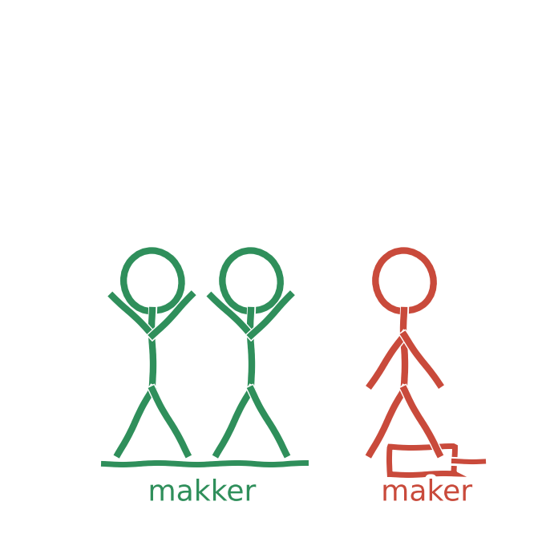

Tænk på AI som en fitnessmakker. En god makker støtter dig, udfordrer dig og hjælper dig med at blive bedre. Men hvis makkeren overtager hele træningen og løfter vægtene for dig, bliver du ikke selv stærkere. Det samme gælder AI i skolen. Hvis teknologien understøtter din tænkning, kan den styrke din læring. Hvis den overtager opgaven, risikerer du at lære mindre, ikke mere.
Det, der gør dig til dig, er kreativitet, empati og evnen til at tænke i nye baner. Det er noget, AI ikke kan overtage, og det er også det, din uddannelse skal styrke (Conrath, 2026).
TipHver gang du åbner en chatbot til en skoleopgave, så spørg dig selv, om du bruger den til at blive klogere eller til at slippe for at tænke.
Kilder
- Conrath, M. (2026). AI i undervisningen. Fra teknik til deltagelse. Skolebiblioteksforeningen, Faghæfte 5/2026.